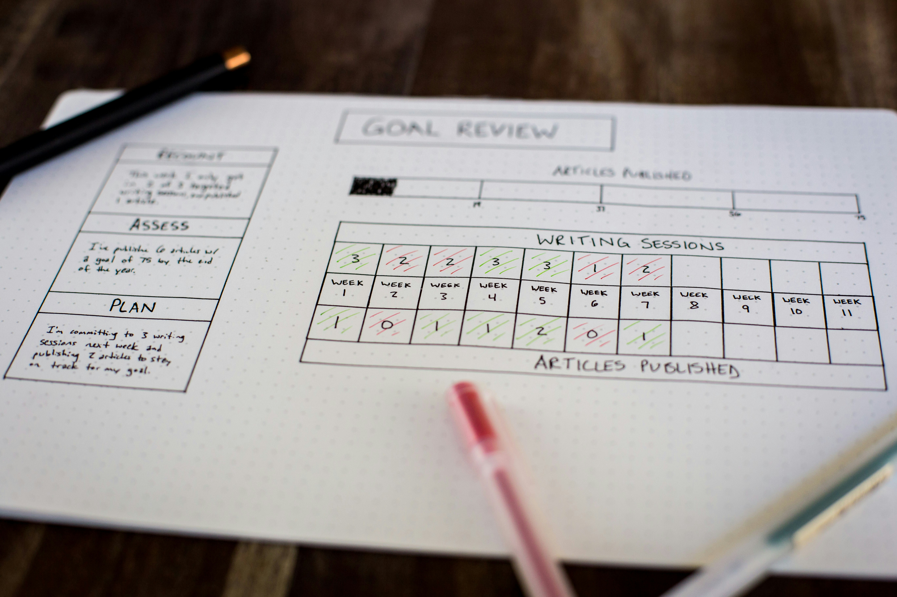

Evaluate
Current Experience
Judge what exists against clear principles, with evidence you can show.

Winnie
Nguyen
Six moves.
One ranked evaluation.
Find one thing that
slows a hungry customer.
No vocabulary yet. Say what you notice.
A reaction can’t be checked.
A finding can.
finding
Four parts.
One rule.
Choose a method.
The stage your project is in decides what you do first.
Three stages.
Three starting points.
Three methods.
Three questions.
You know why.
A new user doesn’t.
Minutes
- Place your project on the stage ladder
- Pick one method to start with
- Write one line on why
- Share back
The principles.
What you judge against.
Ten principles. Three families.
Visibility of system status
The system keeps users informed about what is going on, through timely feedback.
Match between system and the real world
Speak the users’ language, with words and concepts they already know, not internal jargon.
User control and freedom
Users make mistakes and need a clearly marked emergency exit to leave the unwanted state.
Consistency and standards
Same words, same actions, same patterns, inside the product and across platform conventions.
Error prevention
Eliminate error-prone conditions, or check for them and confirm before the action is committed.
Recognition rather than recall
Make options visible. Users should not have to remember information from one part to another.
Flexibility and efficiency of use
Shortcuts, hidden from novices, speed up the work of experts. The product serves both.
Aesthetic and minimalist design
Interfaces should not contain information that is irrelevant or rarely needed.
Help users recognize, diagnose, and recover from errors
Error messages in plain language, name the problem precisely, and suggest a solution.
Help and documentation
Best if no explanation is needed. When it is, help is easy to search, task-focused, and short.
Minutes
- Pick one flow in your own project
- Find 5 issues on its screens
- Write each as what, where, which principle
- Add a screenshot as proof

Evaluate together.
One finding modelled. Two found by you.
“Confusing” or a finding?
At Review orderWhere, the service fee is labelled “SF” with no explanationSaw, so a user can’t tell what they’re paying for before they commit. Breaks Match with the real worldPrinciple. Screenshot attachedProof.
Three tests.
Before you log it.
Minutes
- Watch one finding modelled on the seeded checkout
- Find two more in the four-part format
- Add a screenshot to each
- Compare with the answer key
Rate by severity.
A list is complaints. A ranked list is a plan.
Five levels.
One ranking.
Don’t guess.
Ask three.
Biggest problems
rise to the top-right.
Plot each issue by how often users hit it and how much it costs them.
Minutes
- Rate three food-delivery issues silently
- Compare with the mentor
- Where you differ by more than one point, explain why
Your own product.
No AI yet.
Minutes
- One flow, your screenshots
- Use the Cheat Sheet and the Worksheet
- Find 3 to 5 issues
- Each with a screenshot, frequency, impact, and severity 0 to 4
AI as an assistant.
Now that you can check it.
AI can miss it.
AI can invent it.
AI doesn’t know your users, and it can describe a problem that isn’t on the screen. Your manual pass is what lets you tell the difference.
suggestion
worksheet
Three steps.
Your own files.
Minutes
- Brainstorm with AI and verify each suggestion
- Turn your worksheet into evaluation.md
- See a finished evaluation.html
- Build yours as homework
Two flows.
One ranked list.
- Finish your first flow
- Evaluate a second flow, manual first, then AI
- Run the four accessibility checks on both flows
- Every finding: screenshot and severity
- Generate evaluation.md for both flows, then evaluation.html
- One line at the top: which method you started with, and why
- Add “Open questions about users”: for your top three findings, what do I believe that I haven’t checked?
- Optional: ask a peer to rate your top three blind
6+ findings.